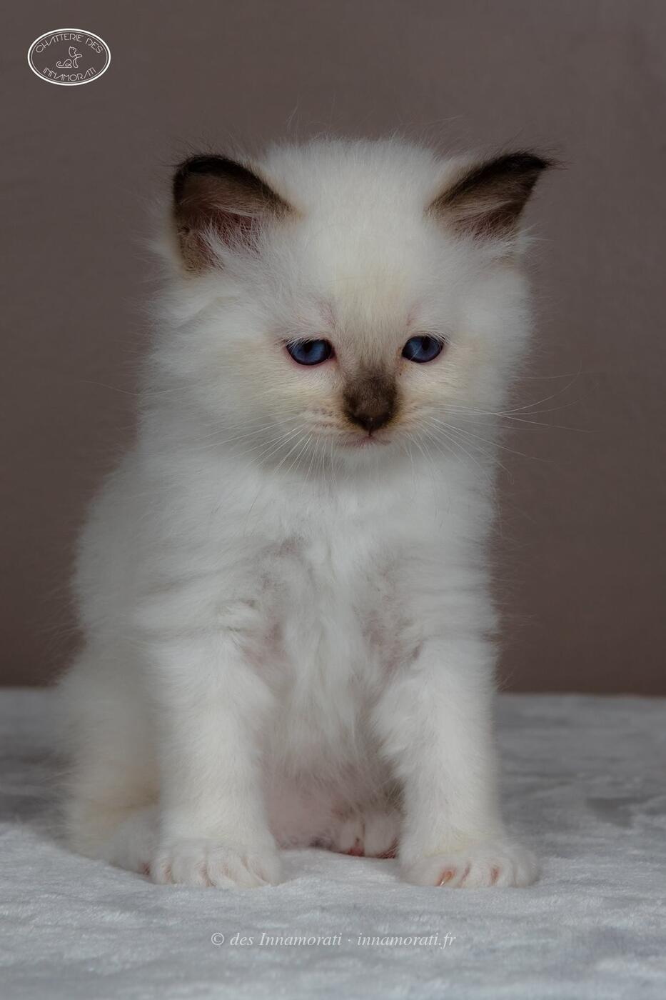

RobeMâle · Chocolat point
StatutAdopté
Album13 photos, de juillet 2017 à février 2019


Photos réduites et marquées. Elles appartiennent à la Chatterie des Innamorati et ne peuvent pas être reprises dans une annonce.

Photos réduites et marquées. Elles appartiennent à la Chatterie des Innamorati et ne peuvent pas être reprises dans une annonce.